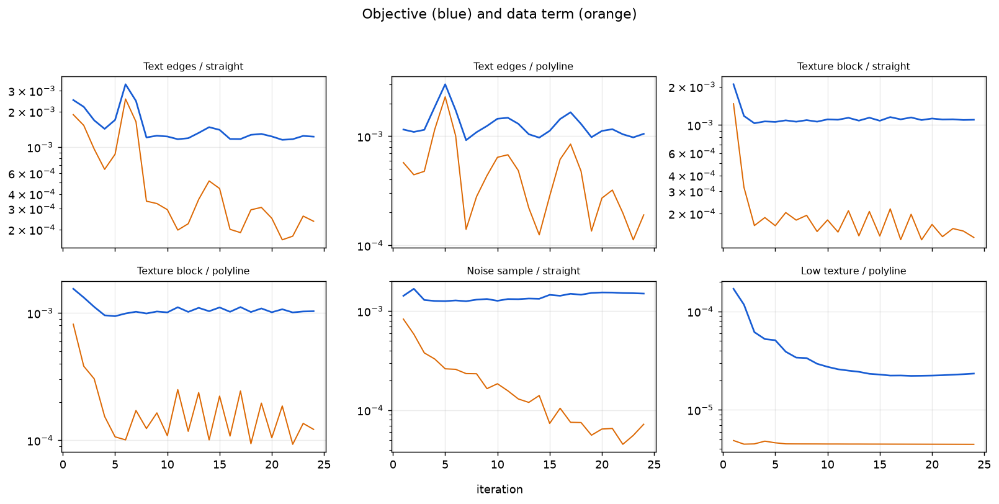
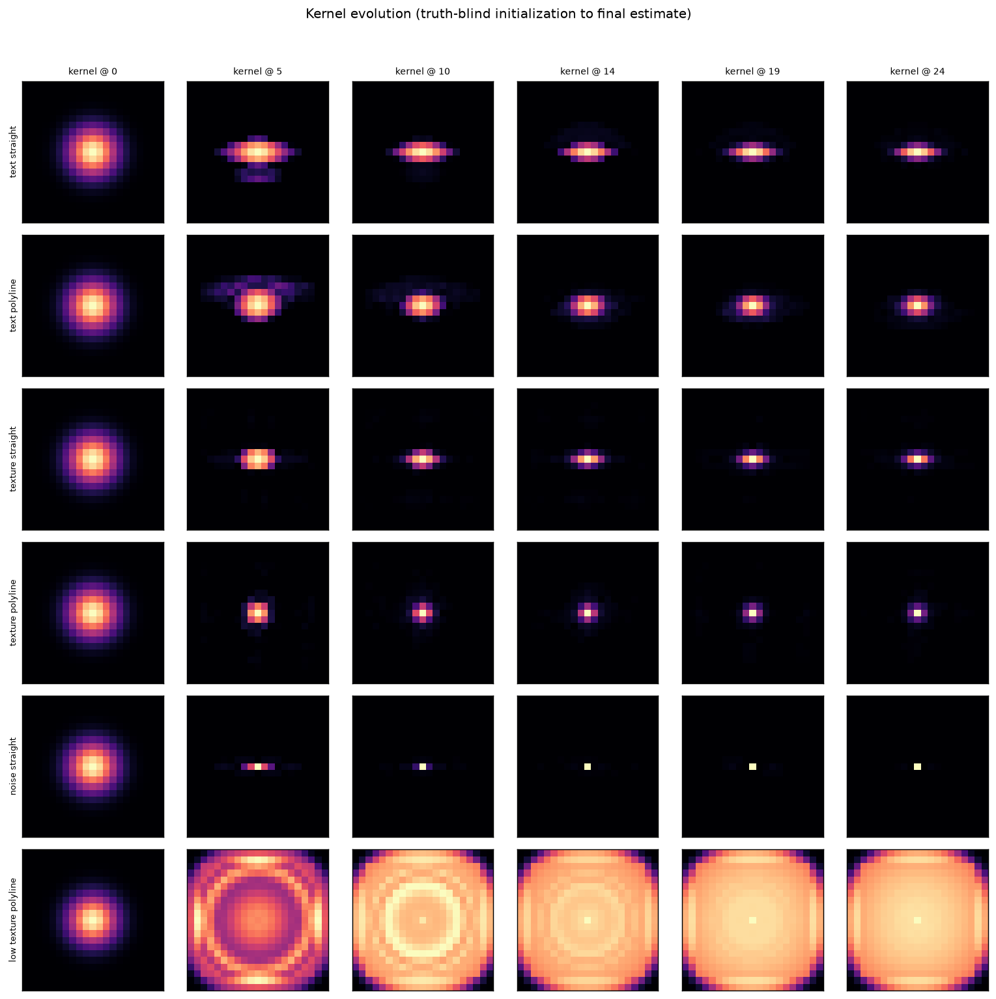
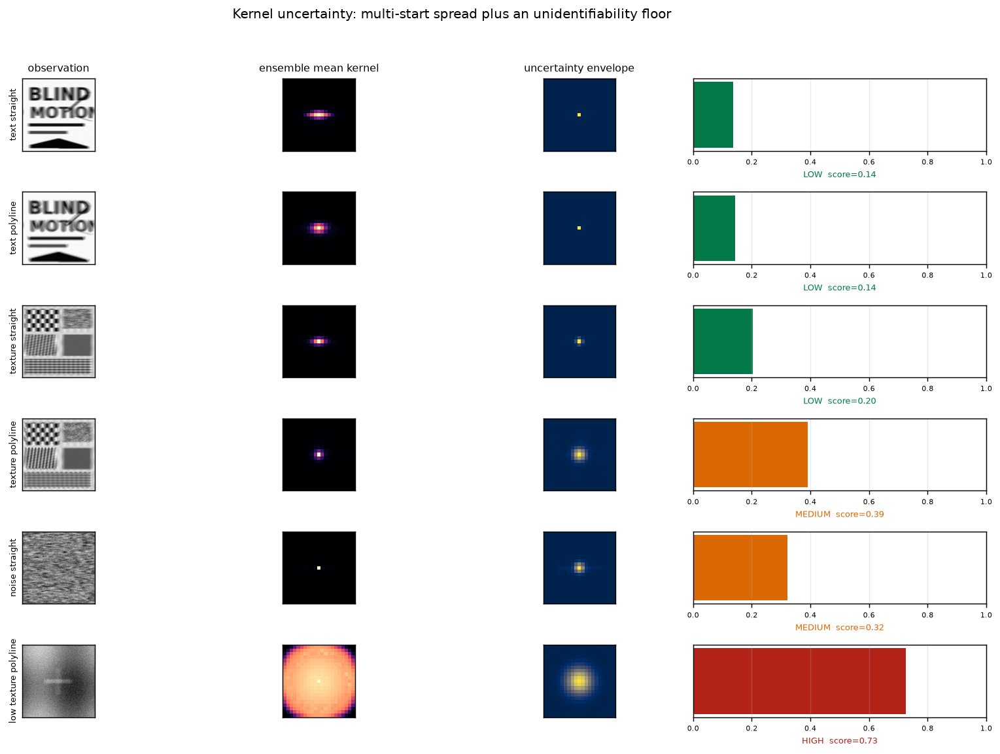
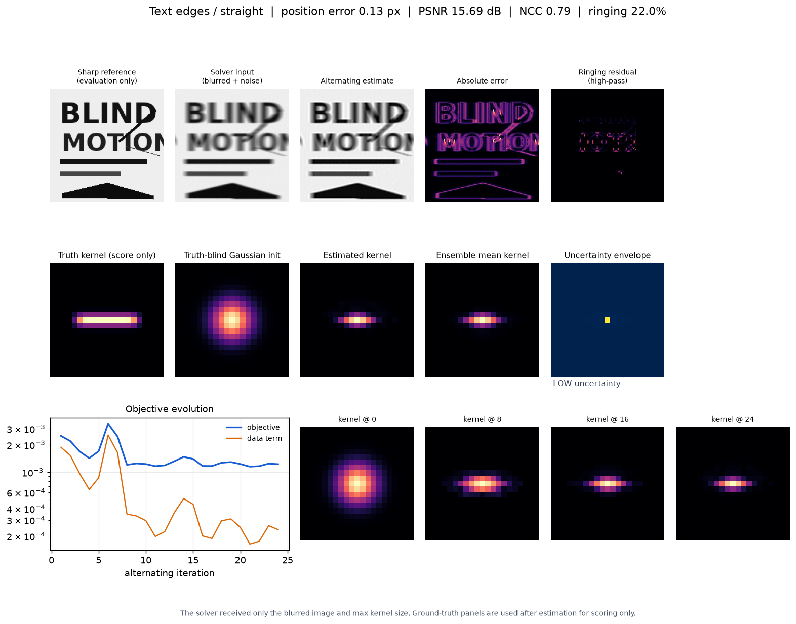
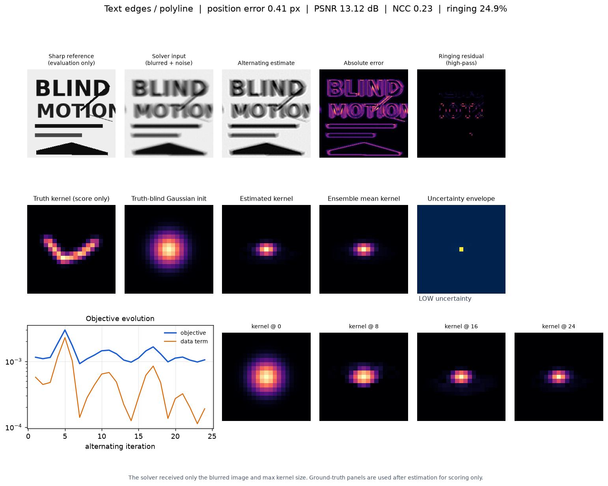
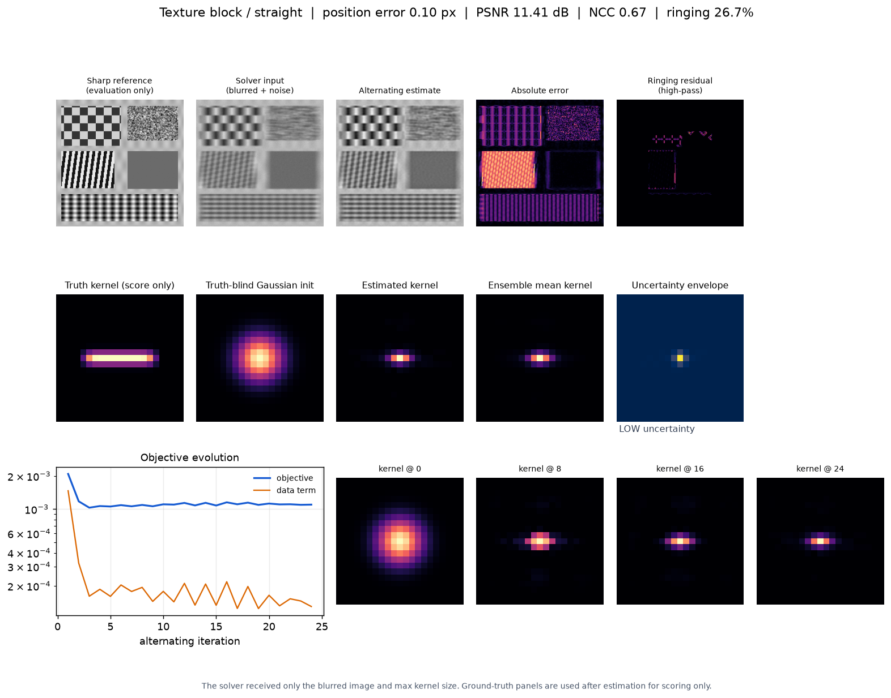
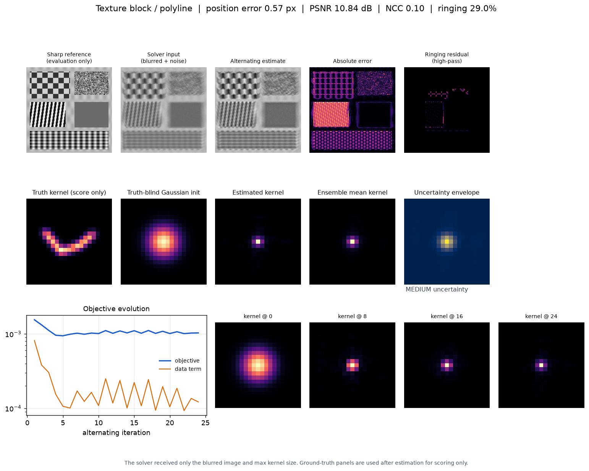
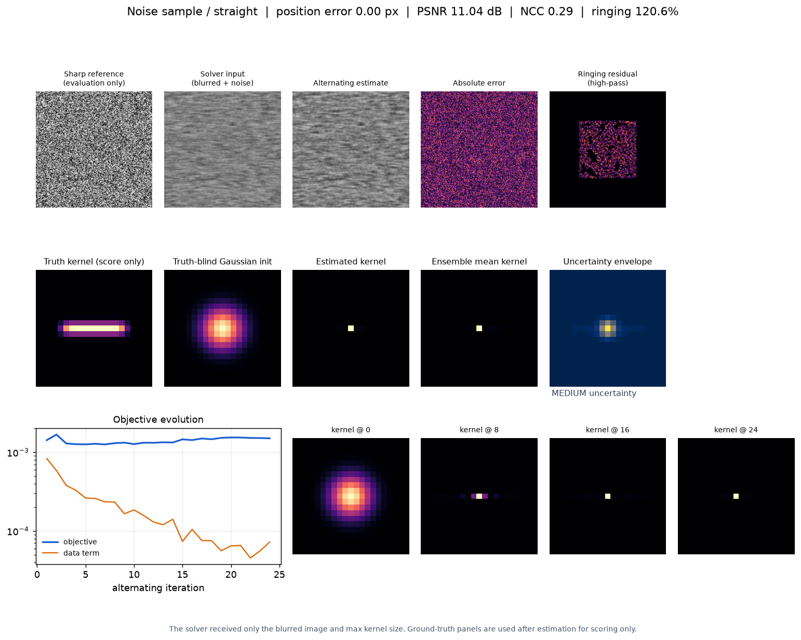
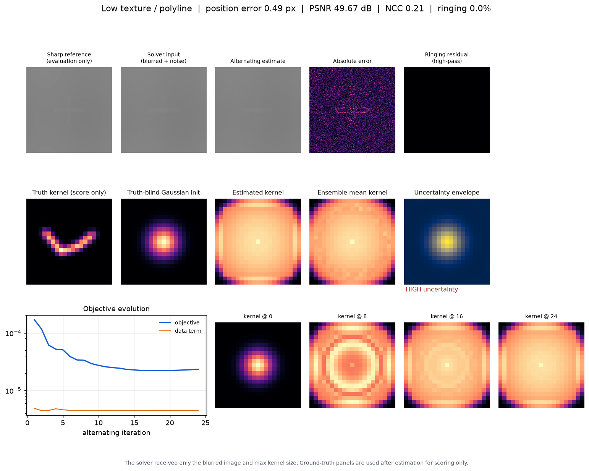

二维盲运动去卷积实验
从短直线与折线轨迹生成的模糊图中，交替估计非负、单位和的模糊核与清晰图。 求解器只接收模糊图像与最大核尺寸；真实轨迹仅用于事后的误差评估与核对照。
blurred 和 max_kernel_size。初值固定为中心各向同性高斯，
不从轨迹、核尺寸真值或清晰图初始化。低纹理样本的核不可唯一辨识，报告使用多初值集成的
核标准差、质心标准差和可观测性分数显示该不确定性。
汇总指标
| 样本 | 类型 | 质心误差 px | 峰值误差 px | 核 NCC | 重建 PSNR | 相对误差 | 振铃 | 不确定性 |
|---|---|---|---|---|---|---|---|---|
| Text edges / straight | text_edges | 0.13 | 1.0 | 0.789 | 15.69 (+0.56 dB) | 21.6% | 22.0% | 低 · 0.14 |
| Text edges / polyline | text_edges | 0.41 | 2.8 | 0.227 | 13.12 (+0.17 dB) | 29.1% | 24.9% | 低 · 0.14 |
| Texture block / straight | texture_blocks | 0.10 | 1.0 | 0.672 | 11.41 (-0.71 dB) | 43.4% | 26.7% | 低 · 0.20 |
| Texture block / polyline | texture_blocks | 0.57 | 2.8 | 0.098 | 10.84 (-0.56 dB) | 46.3% | 29.0% | 中 · 0.39 |
| Noise sample / straight | noise | 0.00 | 1.0 | 0.292 | 11.04 (-0.01 dB) | 49.1% | 120.6% | 中 · 0.32 |
| Low texture / polyline | low_texture | 0.49 | 2.8 | 0.209 | 49.67 (+0.00 dB) | 0.6% | 0.0% | 高 · 0.73 |
PSNR 括号内为相对“仅输入模糊图”的增益。振铃指标是真实边缘邻近平坦区中， 重建残差高通分量的 RMS（相对灰度满量程的百分比）。
目标函数与核演化

六组样本的目标函数与数据项。

从盲初值到最终核的快照。
不确定性
集成成员仅改变优化初值与正则强度，不改变输入，也不接触真值。展示的核标准差是 “集成离散度与不可辨识下限”的合成包络；当图像几乎没有结构时，即使多个初值偶然收敛到 相似中心核，核位置仍不可由观测约束。高不确定性不是“失败装饰”，而是数据不支持的结论。

逐样本诊断
Text edges / straight
Crisp glyph and bar edges make horizontal motion observable.

Text edges / polyline
The kink in the trajectory adds a second motion direction.

Texture block / straight
Multi-scale texture supplies motion information in both axes.

Texture block / polyline
Dense structure helps resolve a short kinked path.

Noise sample / straight
Stationary random content gives weak and non-unique motion cues.

Low texture / polyline
Nearly flat input: the kernel is under-constrained; high uncertainty is expected.
低纹理警告：观测中几乎没有稳定边缘，多个初值给出明显不同的核。应把核形状与位置视为不可辨识，而不是只看单一点估计。本例重建图像已退回平滑观测，因此较高的 PSNR 不代表核恢复成功。

方法摘要
1. 图像步：在频域求解带 Laplacian 高通正则的 Wiener 型反卷积，并以松弛系数限制潜像更新。
2. 核步：用潜像与残差的相关计算梯度，结合梯度域残差，经 Adam 更新后投影到非负、和为 1 的单纯形； 同时施加弱 TV、熵和支撑先验。
3. 指标：核位置误差为核质心欧氏距离；重建误差使用有效内部区域的 PSNR 与相对 RMSE； 振铃在真实边缘外侧的平坦环带中度量残差高通能量。
随机种子、完整目标函数序列与逐轮核统计见 results.json； 表格数据见 metrics.csv。